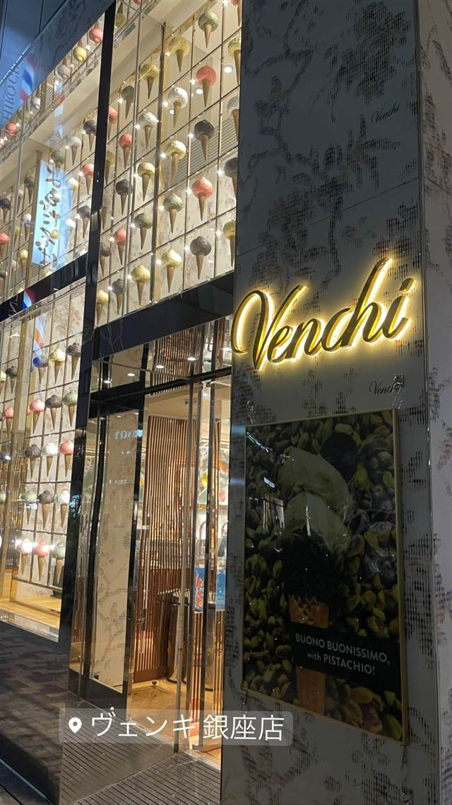
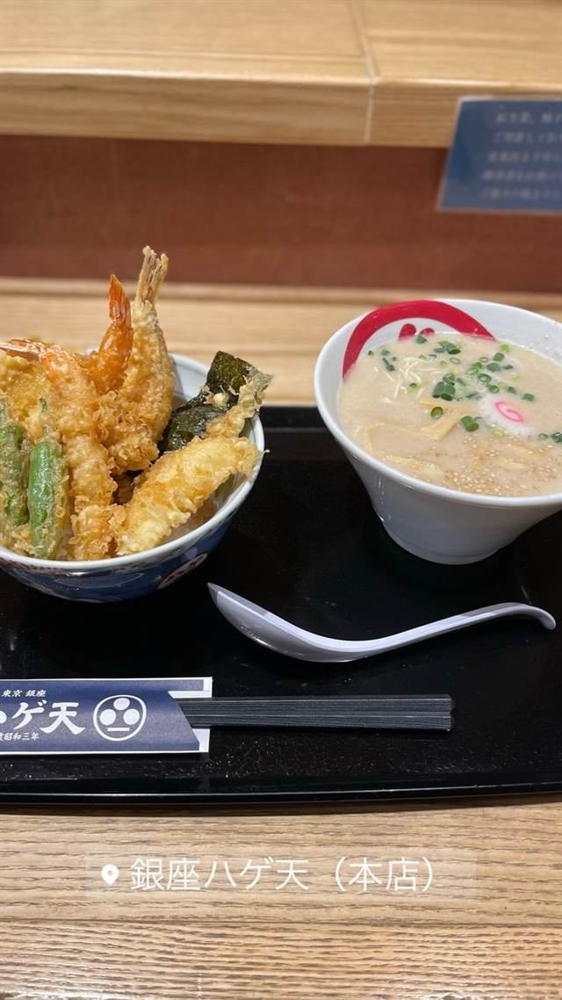

ヴェンキ 銀座店（Venchi）
1878年創業トリノの老舗、量り売りのジャンドゥイオット
ヴェンキ 銀座店
1878年にイタリア・トリノで創業した老舗チョコレート＆ジェラートブランド「ヴェンキ」の日本1号店。創業時からのレシピを受け継ぐジャンドゥイオットなど、90種類を超えるチョコレートを量り売りで楽しめる。
TRIVIA
豆知識
- 日本上陸時点で創業141年という老舗ブランド
- 世界100店舗以上を展開し70か国に輸出している
- 看板商品ジャンドゥイオットは創業当時からのレシピを守っている
REVIEWS
世間の評判
3.45食べログ
ピスタチオジェラートの濃厚さ
- ピスタチオなど濃厚なジェラートを絶品と評価する声が多い
- 価格が高めで贅沢な位置づけだという意見が多い
- 休日や昼間は行列ができ混雑するという声がある
- 外観の高級感や店構えを評価する人もいる
食べログ 口コミ1107件
| 創業 | 1878年イタリア・トリノで創業 |
|---|---|
| 系譜 | シルヴィアーノ・ヴェンキ氏がトリノで開いたチョコレート店が起源。2019年12月12日、銀座松屋通りに日本1号店をオープンした。 |
| 看板 | ジャンドゥイオット（ジャンドゥーヤチョコレート）、ジェラート |
| こだわり | 創業時からの歴史的レシピでジャンドゥイオットを製造し、90種類を超えるチョコレートを量り売りで提供している。 |
| どこから | 都心 |
| 行くなら | 行列 |
| 営業時間 | 月〜日 10:00-21:00 |
| 予算 | 昼 ～¥999 夜 ～¥999 |
| 場所 | 銀座 東京都中央区銀座 |
| メモ | チョコレートは量り売り、ギフト需要も高い。 |
食べたもの：店舗外観
OFFICIAL
店からの知らせ
その日の限定や臨時の休みは、店のXに出ます。
NEARBY
近い店・同じ系統の店
-

天ぷら・天丼 銀座 銀座ハゲ天 銀座本店 頭髪の薄かった初代店主にちなむ店名、薄衣とごま油で揚げる天丼 昼 ¥3,000～¥3,999 夜 ¥6,000～¥7,999 -
 アイス・ジェラート 中目黒駅
Premarché Gelateria Tokyo 中目黒駅前店
常時30〜40種、半数近くがヴィーガンの国際受賞ジェラート
昼 ～¥999 夜 ～¥999
アイス・ジェラート 中目黒駅
Premarché Gelateria Tokyo 中目黒駅前店
常時30〜40種、半数近くがヴィーガンの国際受賞ジェラート
昼 ～¥999 夜 ～¥999
-
 アイス・ジェラート 恵比寿
JAPANESE ICE OUCA（ジャパニーズアイス櫻花）恵比寿本店
宇治田原産の最高級抹茶を使う和素材のアイスクリーム
昼 ～¥999 夜 ～¥999
アイス・ジェラート 恵比寿
JAPANESE ICE OUCA（ジャパニーズアイス櫻花）恵比寿本店
宇治田原産の最高級抹茶を使う和素材のアイスクリーム
昼 ～¥999 夜 ～¥999
-
 ケーキ・パフェ 銀座
珈琲専門店 三十間 銀座本店
地下の隠れ家で味わうふわふわチーズケーキとコーヒー
昼 ¥1,000～¥1,999 夜 ¥1,000～¥1,999
ケーキ・パフェ 銀座
珈琲専門店 三十間 銀座本店
地下の隠れ家で味わうふわふわチーズケーキとコーヒー
昼 ¥1,000～¥1,999 夜 ¥1,000～¥1,999
-
 アイス・ジェラート JR小樽駅
山中牧場 小樽店
100％乳製品を3日熟成させた牛乳ソフトクリーム
昼 ～¥999 夜 ～¥999
アイス・ジェラート JR小樽駅
山中牧場 小樽店
100％乳製品を3日熟成させた牛乳ソフトクリーム
昼 ～¥999 夜 ～¥999
-
 アイス・ジェラート 熱海駅
熱海プリン（本店）
熱海温泉の源泉水を使いじっくり蒸し上げる土地由来のプリン
昼 ～¥999 夜 ～¥999
アイス・ジェラート 熱海駅
熱海プリン（本店）
熱海温泉の源泉水を使いじっくり蒸し上げる土地由来のプリン
昼 ～¥999 夜 ～¥999
ONSEN & SAUNA